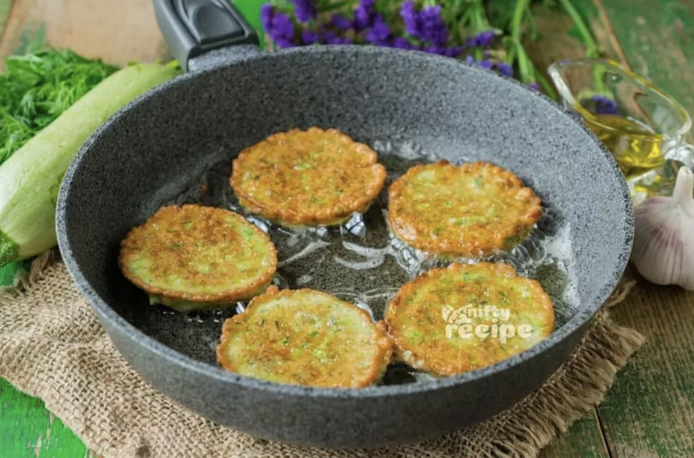
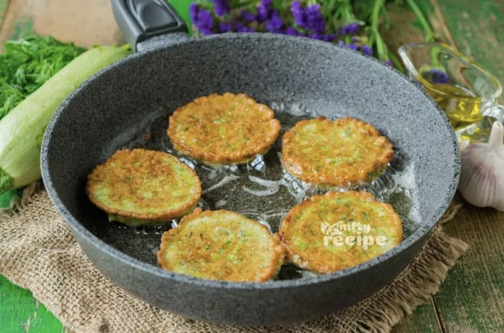

Zucchini Fritters
Origin: Unknown Source: niftyrecipe.com Category: Side dish/main dish
I found this recipe for zucchini fritters on a food blog when I was looking for quick and easy dishes to make during undergrad. It uses minimal ingredients and can be done in less than half an hour. They’re delicious and filling and go great with dipping sauces.
Recipe Ingredients
- Zucchini
- Egg
- Flour
- Vegetable/seed oil
- Garlic
- Salt and pepper
Recipe Steps
- Combine eggs, salt, and pepper and whisk
- Add pressed garlic
- Grate the zucchini and squeeze the moisture out of it
- Add zucchini and flour and mix
- Heat oil in pan and add dollops of batter
- Serve with or without dipping sauce
Additional Food images
 


Chinese Hot and Sour Soup
Origin: China Source: Family Recipe Category: Soup
Chinese Hot and Sour Soup (酸辣汤) is a popular and flavorful soup known for its spicy and tangy taste. It's made with a variety of ingredients including tofu, mushrooms, and bamboo shoots.
Recipe Ingredients
- Tofu
- Mushroom
- Water
- Pork
- Bamboo Shoots
- Soy sauce
Recipe Steps
- Boil
- Simmer
- Cooking
- Dipping sauce
Additional Food images


Swedish Pancakes
Origin: Sweden Source: Kristi Category: Breakfast
Swedish pancakes (Pannkaka [singular] or Pannkakor [plural] in Swedish) are one of the most well-known Scandinavian delicacies, and rightfully so. Tender, buttery and often served with butter and lingonberry jam, there is much to account for their popularity.
Recipe Ingredients
- Butter
- Sugar
- Eggs
- Vanilla
- Milk
- Water
- Salt
- Flour
Recipe Steps
- Combine all ingredients in a blender and blend until completely smooth.Transfer to the refrigerator to rest for at least 2 hours or up to 2 days.
- Preheat the oven to 200 degrees if you plan to eat the pannkakor right away.
- Heat a 10 inch nonstick skillet over medium heat.
- Stir the batter briefly to recombine. Brush skillet with melted butter.
- Pick the skillet up off of the burner and quickly add ¼ cup of batter. Immediately begin swirling the batter around the skillet so that it coats the bottom of the pan.
- Continue swirling until the batter is just set. Return skillet to the burner.
- Cook until the pancake is golden brown in spots on the bottom, about 30 seconds.
- Use a thin spatula to loosen the pancake, flip it over continue to cook on the other side for about 30 seconds.
- Transfer to a plate. Cover with foil and transfer to oven to keep warm and repeat with remaining batter, wiping out skillet in between pancakes with paper towel as needed.
- Serve with lingonberry jam and butter (see note below) or other desired toppings and/or fillings.
Additional Food images